ប្រវត្តិនៃការវិវត្តរបស់ប្រាសាទអង្គរវត្ត
ប្រាសាទអង្គរវត្ត មិនត្រឹមតែជាអច្ឆរិយវត្ថុស្ថាបត្យកម្មប៉ុណ្ណោះទេ ប៉ុន្តែវាក៏ជាសាក្សីរស់នៃការផ្លាស់ប្តូរប្រវត្តិសាស្ត្រ នយោបាយ និងសាសនារបស់កម្ពុជាអស់រយៈពេលជិតមួយសហវត្សរ៍មកហើយ។ ដើម្បីយល់ដឹងឱ្យកាន់តែស៊ីជម្រៅ យើងអាចបែងចែកដំណាក់កាលធំៗនៃការវិវត្តរបស់មហាកំពែងថ្មនេះជា ៣ សម័យកាលដូចខាងក្រោម៖
សម័យមហានគរ ស.វទី ១២៖
យុគមាសនៃការកសាង និងព្រហ្មញ្ញសាសនា
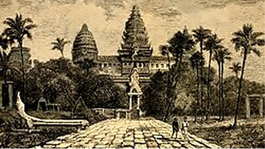
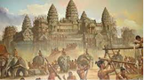
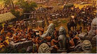
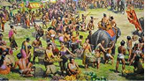
សម័យមហានគរ ជាសម័យកាលចាប់ផ្តើម និងជាចំណុចកំពូលនៃសិល្បៈខ្មែរ ដែលអង្គរវត្តត្រូវបានកសាងឡើងដើម្បីជានិមិត្តរូបនៃស្ថានសួគ៌លើផែនដី។
កាលបរិច្ឆេទ និងអ្នកស្ថាបនា៖ ប្រាសាទនេះត្រូវបានកសាងឡើងនៅចន្លោះឆ្នាំ ១១១៣ ដល់ ១១៥០ ក្នុងរជ្ជកាលរបស់ ព្រះបាទសូរ្យវរ្ម័នទី២ ដែលជាមហាក្សត្រដ៏មានមហិទ្ធិឫទ្ធិមួយព្រះអង្គក្នុងអាណាចក្រខ្មែរ។
ជំនឿ និងការឧទ្ទិស៖ ខុសប្លែកពីប្រាសាទមុនៗដែលភាគច្រើនឧទ្ទិសថ្វាយព្រះសិវៈ (ឥសូរ) អង្គរវត្តត្រូវបានកសាងឡើងដើម្បីឧទ្ទិសថ្វាយ ព្រះវិស្ណុ (នារាយណ៍) ក្នុងព្រហ្មញ្ញសាសនា។ លើសពីនេះ វាក៏ត្រូវបានរៀបចំឡើងជា «ប្រាសាទភ្នំ» សម្រាប់ធ្វើជាព្រះសុសាន (ទីតម្កល់ព្រះអដ្ឋិ) របស់ព្រះបាទសូរ្យវរ្ម័នទី២ ពេលព្រះអង្គសោយទិវង្គតទៅ។
ឈ្មោះដើម៖ នៅក្នុងសម័យនោះ ប្រាសាទនេះមានឈ្មោះផ្លូវការថា "បរមវិស្ណុលោក" ដែលមានន័យថា ពិភពដ៏បរិសុទ្ធរបស់ព្រះវិស្ណុ ឬឋានៈដ៏ខ្ពង់ខ្ពស់ដែលព្រះរាជាទទួលបានក្រោយការសោយទិវង្គតទៅជួបព្រះវិស្ណុ។
អត្ថន័យស្ថាបត្យកម្ម៖ *ប្រាង្គទាំងប្រាំ* តំណាងឱ្យកំពូលភ្នំព្រះសុមេរុ ដែលជាមជ្ឈមណ្ឌលនៃចក្រវាឡ និងជាទីគង់ប្រថាប់របស់ពួកទេវតា។
សម័យកណ្ដាល ស.វទី ១៦៖
ការផ្លាស់ប្តូរសាសនា និងការលេចឡើងនៃឈ្មោះ «អង្គរវត្ត»
ក្រោយការបោះបង់ចោលរាជធានីអង្គរទៅតំបន់ខាងត្បូង អង្គរវត្តមិនត្រូវបានទុកចោលឱ្យរុករានដោយព្រៃជ្រៅទាំងស្រុងនោះទេ ប៉ុន្តែបានក្លាយជាទីសក្ការៈដ៏សំខាន់សម្រាប់ការផ្លាស់ប្តូរជំនឿ។
ការផ្លាស់ប្តូរឥទ្ធិពលសាសនា៖ នៅសតវត្សរ៍ទី១៦ អាណាចក្រខ្មែរបានងាកមកគោរពបូជា ព្រះពុទ្ធសាសនាថេរវាទ យ៉ាងខ្ជាប់ខ្ជួន។ អាស្រ័យហេតុនេះ ប្រាសាទព្រហ្មញ្ញសាសនាមួយនេះ ត្រូវបានបំប្លែងទៅជាវត្តអារាមព្រះពុទ្ធសាសនា ដោយមានការដាក់បញ្ចូលព្រះពុទ្ធរូបនៅតាមថែវ និងប្រាង្គកណ្តាល។
ការជួសជុលក្នុងរជ្ជកាលព្រះបាទច័ន្ទរាជា (១៥៤៦-១៥៦៤)៖ ព្រះអង្គបានយាងត្រឡប់មកតំបន់អង្គរវិញ ហើយបានបញ្ជាឱ្យមានការកាប់ឆ្ការព្រៃ ជួសជុលឡើងវិញ និងឆ្លាក់បង្ហើយផ្ទាំងចម្លាក់រឿងរ៉ាវនានានៅតាមថែវជ្រុងឦសាន (ខាងកើតឈៀងខាងជើង) ដែលពីមុននៅទទេស្អាត។
ប្រភពនៃឈ្មោះ «អង្គរវត្ត»៖ គឺនៅក្នុងសម័យកាលនេះឯងដែលពាក្យថា «អង្គរវត្ត» ចាប់ផ្តើមលេចឡើងក្នុងសិលាចារឹក និងការហៅតៗគ្នា។ ពាក្យ «អង្គរ» មកពីពាក្យសំស្ក្រឹត «នគរ» (ទីក្រុង) រីឯ «វត្ត» គឺទីអារាមព្រះពុទ្ធសាសនា។ ដូចនេះ អង្គរវត្ត មានន័យថា "ទីក្រុងដែលមានវត្តអារាម"។
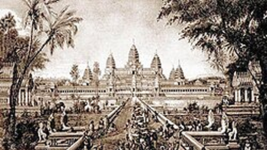
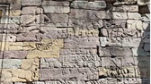
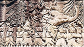
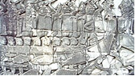
សម័យបច្ចុប្បន្ន៖
បេតិកភណ្ឌពិភពលោក និងជានិមិត្តរូបនៃដួងព្រលឹងជាតិ
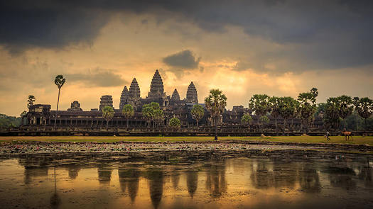
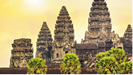
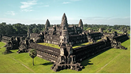
នាពេលបច្ចុប្បន្ន អង្គរវត្តបានវិវត្តពីប្រាសាទបុរាណ មកជាបេះដូងសេដ្ឋកិច្ច វប្បធម៌ និងជាអត្តសញ្ញាណជាតិដែលមិនអាចខ្វះបាននៅលើឆាកអន្តរជាតិ។
មជ្ឈមណ្ឌលជំនឿរស់៖ មិនមែនជាតំបន់ប្រវត្តិសាស្ត្រដែលស្លាប់បាត់បង់ជីវិតនោះទេ អង្គរវត្តនៅតែបន្តតួនាទីជាទីសក្ការៈបូជាព្រះពុទ្ធសាសនាដ៏មានឥទ្ធិពលបំផុត សម្រាប់ប្រជាជនកម្ពុជានិងពុទ្ធសាសនិកជុំវិញពិភពលោក។
ការទទួលស្គាល់ជាអន្តរជាតិ (UNESCO)៖ នៅឆ្នាំ ១៩Grid (១៩៩២) ប្រាសាទអង្គរវត្ត រួមជាមួយតំបន់រមណីយដ្ឋានអង្គរទាំងមូល ត្រូវបានចុះបញ្ជីជា សម្បត្តិបេតិកភណ្ឌពិភពលោក របស់អង្គការយូណេស្កូ ដែលនេះជាចំណុចរបត់បើកទ្វារស្វាគមន៍អ្នកស្រាវជ្រាវ និងភ្ញៀវទេសចររាប់លាននាក់ពីគ្រប់ទិសទី។
ការអភិរក្ស និងការអភិវឌ្ឍប្រកបដោយចីរភាព៖ ក្រោមការគ្រប់គ្រងរបស់អាជ្ញាធរជាតិអប្សរា សហការជាមួយសហគមន៍អន្តរជាតិ (ដូចជា ICC-Angkor) ប្រាសាទនេះត្រូវបានថែរក្សាយ៉ាងដិតដល់តាមរយៈការជួសជុលតាមបច្ចេកទេសបុរាណវិទ្យា ដើម្បីធានាថាវានៅតែឈរជើងយ៉ាងរឹងមាំសម្រាប់កូនចៅជំនាន់ក្រោយ។